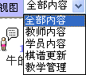

在线教室除了转播对局，讲解变化，习题练习，还能做什么？
这几天和程序员对在线教室做了小小的改进：
凡是威望达到20且是当前教室教师的用户可以在教学过程中对所有参与交流的用户进行奖励和惩罚，每次可以对某用户奖励5个金币或者扣除5个金币的操作。
有啥用？举例：
失落刀和江南新绿在教室中展开在线对局（可以是慢棋），此教室由失落刀创建，创建的时候增加了一名教师“江南新绿”。
ok，现在这个教室有两个教师，此时，他们开始对局，失落刀在盘面上落子后并提交，所有人都可以看到对应的棋局，江南新绿继续行棋，之后两人交替行棋。
而这个过程中，所有观战的用户都可以对当前的局面给出自己推演的局面并提交或者发言。
某用户进入后觉得，瓦萨，好乱，到底谁和谁在下棋？怎么都是棋谱代码？呵呵，很方便，看到下图了吗？

选择教师内容就可以了。这样参与交流的学员发言内容就可以屏蔽掉了。
对于老师来说，比较好的交流就可以给予奖励，希望这样能增进大家交流的积极性。
最后，最关键的问题，如何创建教室呢？
威望达到2的用户就可以创建教室了，页面顶端有个“学”点击即可。
传说中的沙发？
我似乎是第一个体验教室功能的学员吧？
［本站用户 有志青年 于 2009-3-3 16:10:20 花5个金币送您鲜花一朵］

哪位老师讲得比较好呢?